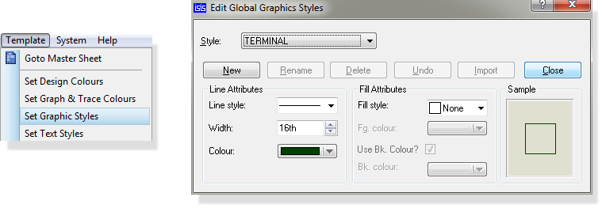
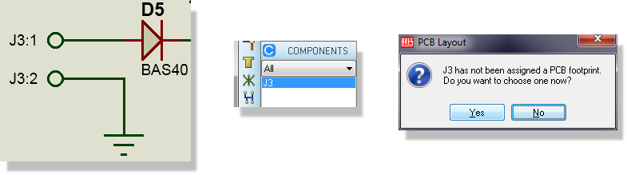
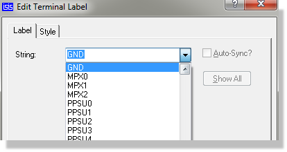

Terminals are used for specifying the interface to a circuit - Proteus does not allow a wire to 'float' - both ends must connect to something so all the inputs and outputs in your design will be indicated by terminals.
There are two types of terminal - Logical Terminals and Physical Terminals. The two are distinguished purely by the syntax of their labels.
You can customize the appearance of terminals by editing the TERMINAL graphics style as shown below. See Editing Global Styles for more information

The Edit Terminal Style dialogue form
A logical terminal serves merely to donate a net name to the wire to which it connects. Groups of wires with one or more net names in common are taken to be connected by the netlist generator. Logical Terminals thus provide a means to connect things together without using wires. In particular they provide the means make connections between the sheets in a multi-sheet design.
As with Wire Labels and Bus Entries, the net name can contain any alphanumeric characters plus the hyphen ('-') and underscore ('_'). Spaces can be used within PROTEUS but may cause problems for other software.
Logical terminals may also connect to buses. This provides an extremely efficient way to run buses up and down a hierarchical design.
See Net Names for discussion of the role of logical terminals in netlisting.
Logical terminals are vital to connectivity in multi-sheet designs. If you are using sub-circuits or working with sizeable schematics please refer to the section on Hierarchical Designs for more information.
See Connecting NC Pins for information on using NC terminals to indicate NC status on component pins.
A physical terminal represents a pin on a physical connector. For example, a terminal with the name:
J3:2
is taken to be pin 2 of connector J3. Whilst it is perfectly possible to deal with connectors in exactly the same way as all other components (i.e. define a device to represent them), using Physical Terminals has the advantage that the pins can be placed wherever it is most convenient.
Physical terminals will appear as parts in the parts bin of the layout module and are then packaged when you place them on the board.

Alternatively, you can specify the package type for the part via a FIELD property assignment block (see Part Property Assignments (*FIELD)) must be used as there is no actual component to edit.
Note that a bus terminal may not be physical, as there is no means to specify the pin numbering for the individual pins.
Proteus supports an unlimited variety of terminal symbols. However, when you first select the Terminal icon, a basic set of 7 types are automatically pre-loaded into the Object Selector.
To place a terminal:
Having placed a terminal, you must then annotate it since an unannotated terminal will be ignored by the netlist compiler. There are a variety of approaches:
It is quite legal to connect buses to terminals. In this case, the name for the terminal should generally define the range for the bus, as in D[0..7], although this is not mandatory. If no range is given, Proteus will use the range given for the bus section that connects to the port, or if that has no name or range then the width will be taken from whatever bus pins connect to the bus.
Placing a terminal without annotating it will be reported as a netlist error since such an object has no meaning, logically or physically.
A terminal may be edited using any of the general editing techniques (see Editing an Object). For your convenience with logical terminals a list of existing named nets is available as a drop down combo box allowing you to easily specify the net name.

The Edit Terminal dialogue form showing a drop down list of net names
In addition, since terminals often appear in groups, the Property Assignment Tool can be put to good use for annotating and setting the electrical type of terminals.
Terminals have the following system properties:
| Property Name | Description |
| NET | The terminal net label. |
| SYMBOL | The symbol used for the terminal. This can be one of the standard terminal types, or else the name of a user defined terminal symbol. |
| NAME | The electrical type of the terminal. This can be any of PASSIVE, INPUT, OUTPUT, BIDIR or POWER. |